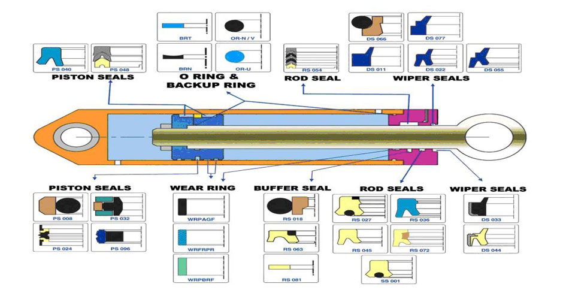

Sealing the complete hydraulic system
Hydraulic systems are sealed using a combination of specialized seals. The main tasks of hydraulic seals are to retain hydraulic fluids, to exclude solid or liquid contaminations, maintain rod and pistons alignment and to maintain the hydraulic pressure. In extreme cases seals need to withstand high pressures, extreme temperatures and transverse forces within the cylinder. Thus in application, the function of Hydraulic Seals goes far beyond preventing fluid leakage.
Hydraulic piston seals prevent fluid from flowing across the cylinder head whereas the Rod seals prevent leakage of fluid from within the cylinder to the outside. This results in the pressure build up on either side of the piston, making the Cylinder extends or retracts in the opposite direction. The Sliding bearing or the Wear ring accommodates side loads, prevents metal-to-metal contact and maintain the concentricity of the hydraulic seals. The external wiper or Scraper prevents penetration of dirt and foreign liquid into the hydraulic system and helps in keeping the contamination level to a minimum.
Hydraulic cylinders also require static sealing solutions including O-rings and most often back-up rings. Below is a schematic of a hydraulic cylinder with different sealing profiles.
